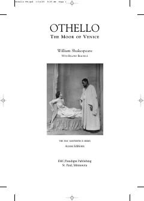

ORashk va xiyonat fojisasini ochib beruvchi mashhur Shekspir dramasi.
Ushbu asar buyuk dramaturg Uilyams Shekspir qalamiga mansub bo'lib, insoniy xiyonat, rashk va aldov mavzularini ochib beruvchi mashhur fojeadir. Kitobda Venetsiya sarkardasi Otelloning fojiali taqdiri va Yagoning qabih rejalari tasvirlangan. Nashr tarkibiga qo'shimcha tahliliy materiallar ham kiritilgan.